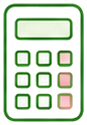
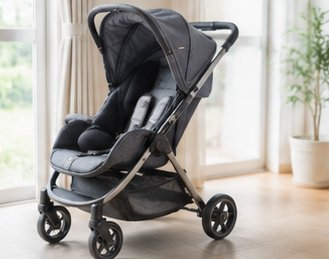
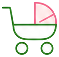
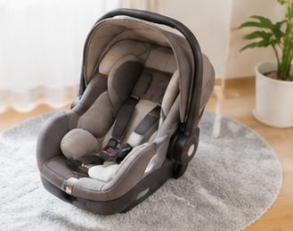
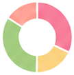

出産方法・病院タイプ・地域補助金・ベビーグッズ代を入力するだけ。
無痛分娩・帝王切開の費用差も即チェック。
病院・地域・分娩方法で費用が大きく変わる。事前に全体像を把握して安心したい。

無痛分娩は高いと聞くけど、実際どのくらい差があるか確認しておきたい。
出産育児一時金50万円に加え、自治体の補助金も差し引いた実質負担額が知りたい。
ベビーグッズ・産後サポート費なども含め、産後1年間の資金計画を立てたい。
妊婦さん・プレパパに選ばれ続ける4つの特徴
出産方法・病院タイプ・育児グッズ代を選ぶだけで、妊娠〜産後1年の総費用を即座に計算。
出産育児一時金50万円＋自治体補助金を差し引いた実質自己負担額を自動計算します。
自然分娩・無痛分娩・帝王切開の3パターンを並べて比較。費用差がひと目で分かります。
産院の待合室でもサッと使えるスマートフォン完全対応。結果をLINEでパートナーにシェアも可能。
1分もあれば出産費用の全体像が把握できます


自然分娩・無痛分娩・帝王切開から選び、公立・私立・プレミアムの病院タイプを選択するだけ。

ベビーグッズ予算と産後サポート費を入力。自治体補助金も入力するとより正確な自己負担額が計算されます。

総費用・実質自己負担額・費用内訳グラフが即表示。LINEやXでパートナーと共有もできます。
妊娠〜産後1年の総費用
都市部と地方では出産費用に大きな差があります。あなたの地域の費用をシミュレーションしてみましょう。
無痛分娩と自然分娩の費用差がひと目でわかって助かりました。パートナーと結果を見ながら資金計画が立てられました。
補助金を差し引いた実質負担額がわかって安心しました。自治体の補助金額を入力するだけで計算できるのが便利でした。
3パターン比較機能が便利で、第二子はプレミアム病院にしようか迷っていた費用差が明確になりました。結果をCSVで保存できるのも嬉しい。
入力1分・登録不要・スマホ対応。妊娠がわかったら今すぐ費用の全体像を把握しましょう。
※計算結果は参考値です。実際の費用は医療機関・地域によって異なります